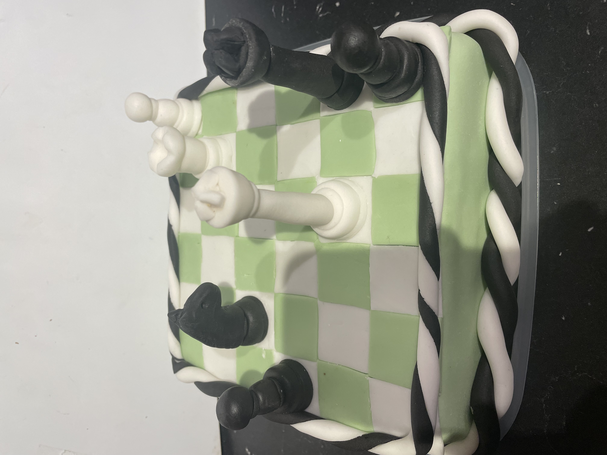

My Great Chess Design
15 Important Life Lessons From Chess: How Chess Is Related To Real Life Situations
By Andrew Hercules "Learning the rules of chess is simple but that alone won’t help you win matches. For that you need strategy, and life is pretty much the same. In chess, you can have a brilliant strategy to beat your opponent but if they make moves you don’t want them to, it can all come crashing down to nothing. That’s why you need backup plans B and even C for when Plan A doesn’t work out. In chess, it’s called seeing the whole board; in life, it’s seeing the big picture. When you’re inexperienced you can be fixated on that one set of moves you’re making to win the game. But you’re so focused on them that you’ve missed something that’s staring you right in the face. You only see it once your opponent moves in and turns the tables on you. in life the most successful people are two steps ahead or well ahead of the game. They are organized, anticipate problems and have an idea of how to deal with them well before they occur. Of the many benefits chess has, one of the lesser expected ones is that it can actually make you more creative. In fact, it’s been shown to improve your thinking in both hemispheres of the brain and help you with logical and creative thinking at the same time."
My Gradient Cat Design
13 Life lessons to Learn from Your Cat
By Metropolitan Girls
"Live in the moment... treasure 'Now' the most. Cats are gentle and extremely forgiving. But just as a reminder, forgive doesn’t mean forgetting. Just because you don't hold grudges doesn’t mean you should let people walk all over you. Always be curious, you should explore new areas and knowledge in life with more zest. Practice mindfullness. Remember to have fun."